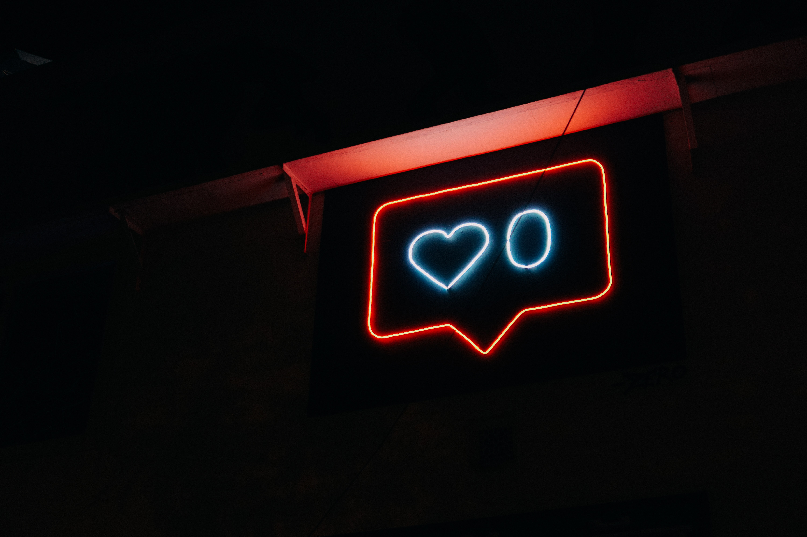

The Effects of User Comments on Science News Engagement |
An HCI Research Agenda for Online Science Communication |
Meta-summaries of COVID-19 Vaccine Safety Research |
|  |

|
|
|
How reddit comments act as a heuristic signal for a science article's qualities, affecting people's likelihood to read it. |
Interviews with HCI researchers to inform future work on online science communication. |
Summarizing covid vaccine safety research for vaccine-hesitant people. |